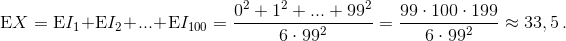

In a tournament, 100 wrestlers are taking part, all of whom have different strengths. In any fight between two wrestlers, the one who is stronger always wins. In the first round the wrestlers broke into random pairs and fought each other. For the second round, the wrestlers once again broke into random pairs of rivals $($it could be that some pairs will repeat$)$. The prize is given to those who win both matches. Find:
a) the smallest possible number of tournament winners;
b) the mathematical expectation of the number of tournament winners.
a) See problem number 64440.
b) We number the fighters from the weakest by the number 1 to the strongest by the number 100. Let $I_k$ be the indicator of the event "the k-th wrestler won both matches". The probability of defeating an opponent in each fight for the k-th wrestler is equal to the probability that the wrestler’s opponent is one of those k-1 wrestlers who is weaker. Hence, the probability of winning is k-1/99. The probability of winning both times is $(\frac{k-1}{99})^2$, so $EI_k$ = $(\frac{k-1}{99})^2$.
The total number of winners, X, is equal to the sum of all the indicators, that is 
a) 1; b) ≈33.5.
Marks: 1 + 2